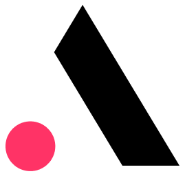

1
Map the demand
Review open client roles, must-have stacks, language needs, and onsite limits before any profile is proposed.

Saw you are growing the outsourcing team for end clients. Here is how Elinext would help ANCO cover specialist roles faster, while your team keeps the client relationship.
Start with a six-week pilot. ANCO keeps account ownership, scope control, and client communication.
Review open client roles, must-have stacks, language needs, and onsite limits before any profile is proposed.
Add vetted engineers who work under ANCO's delivery process and join the client cadence quickly.
Set QA checks, handover notes, and weekly demos so end-client work stays predictable.
After six weeks, keep the best roles and expand only where ANCO sees client demand.

Elinext scaled a QA team for a complex infrastructure product and helped improve product quality and test coverage.
Read case study
Elinext helped build a Microsoft 365 security platform with Azure, .NET Core, Angular, Graph API, and QA.
Read case study